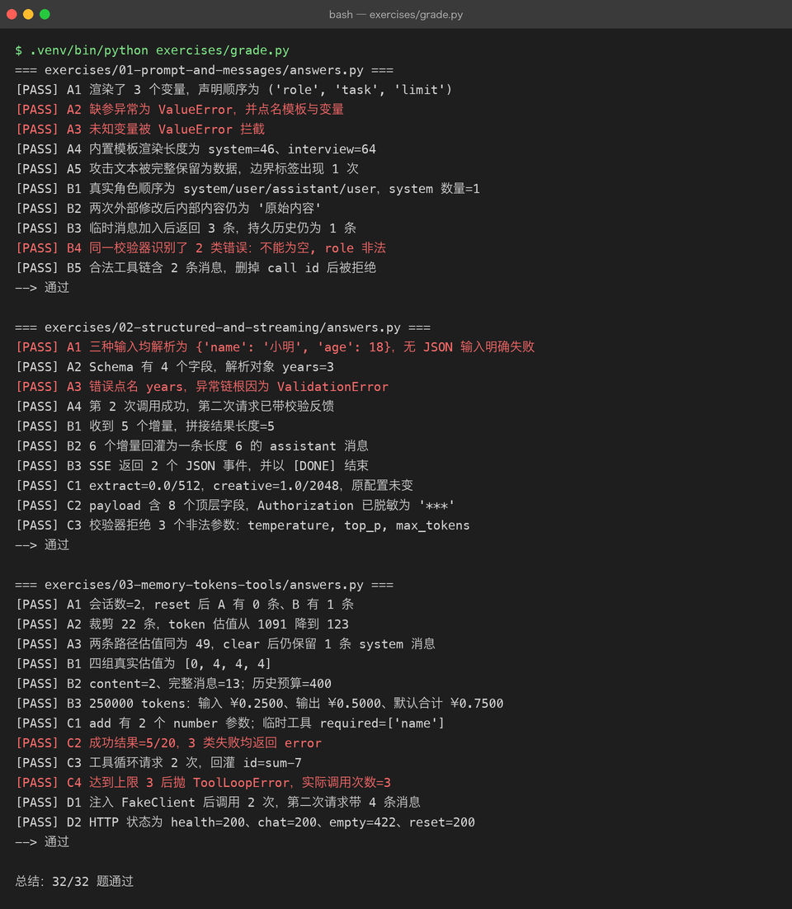
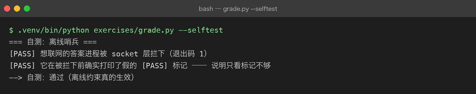

Exercises — Project 03 学习验证与离线判卷
免责说明：
answers.py跑通，只能证明参考答案与当前仓库实现匹配，不能证明你已经学会。 AI 不会替你勾选学习状态；所有状态默认 ⬜，是否掌握只能由你本人在独立完成并讲清原因后判断。
怎么用
- 先看 milestone：先阅读
../milestones/中对应章节，理解概念与项目实现。 - 自己写：按各组
README.md的输入、输出和验证要求独立实现，不要先打开参考答案。 - 卡住再看：只查看
answers.py里卡住的那一个函数，对照后关掉并重新独立完成。
目录
| 目录 | 覆盖 Milestone | 题数 |
|---|---|---|
| 01-prompt-and-messages | M01 Prompt、M02 Messages | 10 |
| 02-structured-and-streaming | M03 结构化输出、M04 流式、M06 模型参数 | 10 |
| 03-memory-tokens-tools | M05 会话记忆、M07 Token/上下文窗口、M08 Function Calling、M09 应用架构 | 12 |
合计 32 题。
判卷
在 projects/03-ai-application 下运行：
.venv/bin/python exercises/grade.py如需保存结果：
.venv/bin/python exercises/grade.py > exercises/out/grade.txt 2>&1判卷器会从每组 README.md 的 - [ ] **A1** ... 行读取题号，再通过 _offline_guard.py 运行对应 answers.py。每题必须打印 [PASS] <题号>，脚本必须以 0 退出；任何非回环网络连接都会被直接拒绝。
为什么不用「符号黑名单」判联网
黑名单会误报 —— 例如「构造一个真实客户端、检查它的 headers 有没有被脱敏」并不发任何请求； 它也拦不住偷偷连一个内网地址。真正可靠的是在 socket.socket.connect / socket.create_connection 上装闸门。--selftest 是这条约束的自证：它跑一个「先打印假 [PASS] Z9，再尝试连接外网」的脚本， 确认进程被拦下 —— 顺便说明只看 [PASS] 标记是不够的，还要看退出码。
.venv/bin/python exercises/grade.py --selftest本次判卷结果（真实运行）

哨兵自测同样是从真实子进程里跑出来的：

跑通 32/32。这是参考答案的成绩，不是你的成绩。
再次说明：判卷结果是参考答案的验收结果，不是你的学习证明。只有你能决定是否把 ../LEARNING.md 中的 ⬜ 改为完成状态。